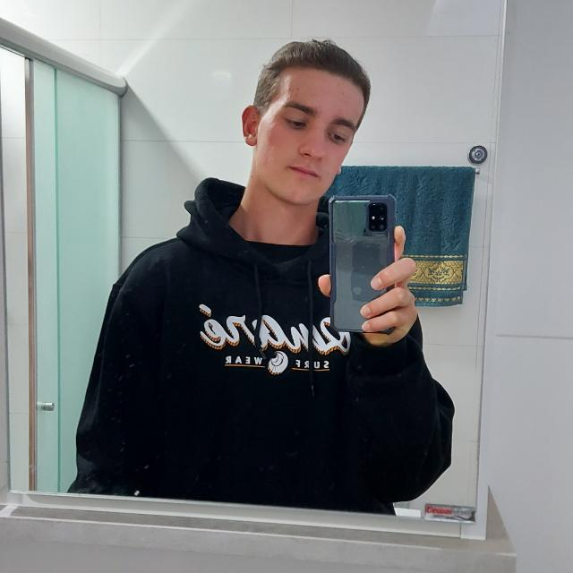
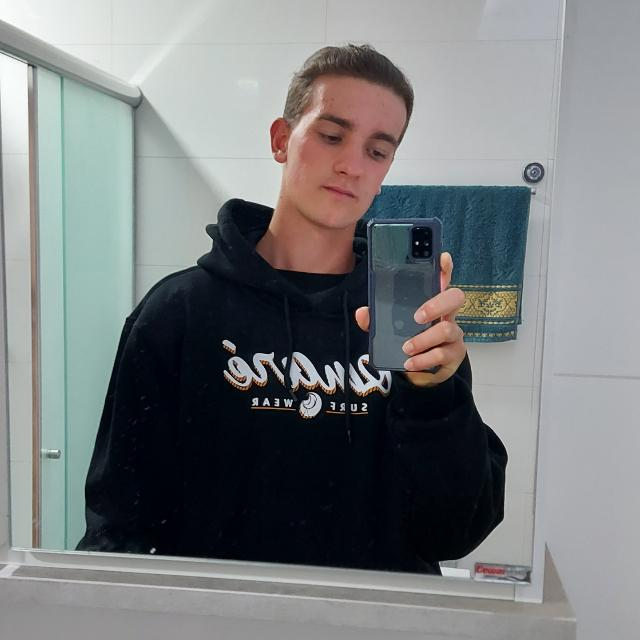

São eles...
Enzo
Zardo
Zardo
Mateus
Matana
Matana
Mikael
Moreira
Moreira
3 Vingadores resolveram em um belo dia deixar suas lutas de lados e se juntarem para desenvolver um site. Enzo, com seus poderes de Design e Organização, Mikael com sua experiencia a mais em JavaScript e Html. E Mateus Matana, o Vingador aprendiz prodigio com seu perfeccionismo. Eles juntam suas habilidades e criam o site sobre os seus outros companheiros Vingadores (os da Marvel, menos conhecidos). O resultado é o que estamos vendo nessa presepada...
Enzo:
Meu voto foi principalmente pela fotografia dos filmes, pois sabia que tanto a paleta de cores quanto as cenas dos filmes e posters iriam ajudar a fazermos um site bonito e com boas interações.
Mateus:
Dei a ideia de fazermos com este tema pois gosto muito dos filmes da Marvel em geral, acho muito legal o panejamento deles para fazer todos os filmes e tudo aquilo que foi feito para que todos se unissem em um final épico.
Mikael:
Escolhi esta opção pois adoro filmes de super-heróis do geral, sinto que sempre trazem histórias emocionantes e que tem um final aconchegante. Apesar de muitos não gostarem, adoro os clichês deste gênero.